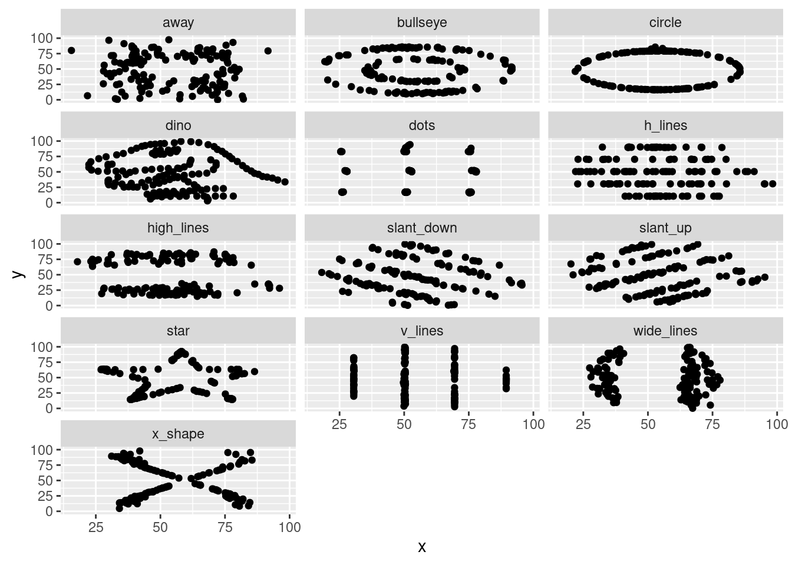

15 Script: datasauRus.R
# setwd("/home/sthu/Dropbox/hsf/23-ws/ds_mim/")
rm(list = ls())
# Load the packages datasauRus and tidyverse. If necessary, install these packages.
# load packages
if (!require(pacman)) install.packages("pacman")
pacman::p_load(datasauRus, tidyverse)
# The packagedatasauRus comes with a dataset in two different formats:
# datasaurus_dozen and datasaurus_dozen_wide. Store them as ds and ds_wide.
ds <- datasaurus_dozen
ds_wide <- datasaurus_dozen_wide
# Open and read the R vignette of the datasauRus package.
# Also open the R documentation of the dataset datasaurus_dozen.
??datasaurus
# Explore the dataset: What are the dimensions of this dataset? Look at the descriptive statistics.
ds## # A tibble: 1,846 × 3
## dataset x y
## <chr> <dbl> <dbl>
## 1 dino 55.4 97.2
## 2 dino 51.5 96.0
## 3 dino 46.2 94.5
## 4 dino 42.8 91.4
## 5 dino 40.8 88.3
## 6 dino 38.7 84.9
## 7 dino 35.6 79.9
## 8 dino 33.1 77.6
## 9 dino 29.0 74.5
## 10 dino 26.2 71.4
## # ℹ 1,836 more rows## [1] 1846 3## # A tibble: 6 × 3
## dataset x y
## <chr> <dbl> <dbl>
## 1 dino 55.4 97.2
## 2 dino 51.5 96.0
## 3 dino 46.2 94.5
## 4 dino 42.8 91.4
## 5 dino 40.8 88.3
## 6 dino 38.7 84.9## Rows: 1,846
## Columns: 3
## $ dataset <chr> "dino", "dino", "dino", "dino", "dino", "dino", "dino", "dino", "dino", "dino", "dino", "dino", "dino", "dino", "dino", "d…
## $ x <dbl> 55.3846, 51.5385, 46.1538, 42.8205, 40.7692, 38.7179, 35.6410, 33.0769, 28.9744, 26.1538, 23.0769, 22.3077, 22.3077, 23.33…
## $ y <dbl> 97.1795, 96.0256, 94.4872, 91.4103, 88.3333, 84.8718, 79.8718, 77.5641, 74.4872, 71.4103, 66.4103, 61.7949, 57.1795, 52.94…## dataset x y
## Length:1846 Min. :15.56 Min. : 0.01512
## Class :character 1st Qu.:41.07 1st Qu.:22.56107
## Mode :character Median :52.59 Median :47.59445
## Mean :54.27 Mean :47.83510
## 3rd Qu.:67.28 3rd Qu.:71.81078
## Max. :98.29 Max. :99.69468# How many unique values does the variable dataset of the tibble ds have?
# Hint: The function unique() return the unique values of a variable and the
# function length() returns the length of a vector, such as the unique elements.
unique(ds$dataset) ## [1] "dino" "away" "h_lines" "v_lines" "x_shape" "star" "high_lines" "dots" "circle" "bullseye"
## [11] "slant_up" "slant_down" "wide_lines"## [1] 13# Compute the mean values of the x and y variables for each entry in dataset.
# Hint: Use the group_by() function to group the data by the appropriate column and
# then the summarise() function to calculate the mean.
ds |>
group_by(dataset) |>
summarise(mean_x = mean(x),
mean_y = mean(y))## # A tibble: 13 × 3
## dataset mean_x mean_y
## <chr> <dbl> <dbl>
## 1 away 54.3 47.8
## 2 bullseye 54.3 47.8
## 3 circle 54.3 47.8
## 4 dino 54.3 47.8
## 5 dots 54.3 47.8
## 6 h_lines 54.3 47.8
## 7 high_lines 54.3 47.8
## 8 slant_down 54.3 47.8
## 9 slant_up 54.3 47.8
## 10 star 54.3 47.8
## 11 v_lines 54.3 47.8
## 12 wide_lines 54.3 47.8
## 13 x_shape 54.3 47.8# Compute the standard deviation, the correlation, and the median in the same way. Round the numbers.
ds |>
group_by(dataset) |>
summarise(mean_x = round(mean(x),2),
mean_y = round(mean(y),2),
sd_x = round(sd(x),2),
sd_y = round(sd(y),2),
med_x = round(median(x),2),
med_y = round(median(y),2),
cor = round(cor(x,y), digits = 4))## # A tibble: 13 × 8
## dataset mean_x mean_y sd_x sd_y med_x med_y cor
## <chr> <dbl> <dbl> <dbl> <dbl> <dbl> <dbl> <dbl>
## 1 away 54.3 47.8 16.8 26.9 53.3 47.5 -0.0641
## 2 bullseye 54.3 47.8 16.8 26.9 53.8 47.4 -0.0686
## 3 circle 54.3 47.8 16.8 26.9 54.0 51.0 -0.0683
## 4 dino 54.3 47.8 16.8 26.9 53.3 46.0 -0.0645
## 5 dots 54.3 47.8 16.8 26.9 51.0 51.3 -0.0603
## 6 h_lines 54.3 47.8 16.8 26.9 53.1 50.5 -0.0617
## 7 high_lines 54.3 47.8 16.8 26.9 54.2 32.5 -0.0685
## 8 slant_down 54.3 47.8 16.8 26.9 53.1 46.4 -0.069
## 9 slant_up 54.3 47.8 16.8 26.9 54.3 45.3 -0.0686
## 10 star 54.3 47.8 16.8 26.9 56.5 50.1 -0.063
## 11 v_lines 54.3 47.8 16.8 26.9 50.4 47.1 -0.0694
## 12 wide_lines 54.3 47.8 16.8 26.9 64.6 46.3 -0.0666
## 13 x_shape 54.3 47.8 16.8 26.9 47.1 39.9 -0.0656# What can you conclude?
# --> The standard deviation, the mean, and the correlation are basically the
# same for all datasets. The median is different.
# Plot all datasets of ds. Hide the legend. Hint: Use the facet_wrap() and the theme() function.
ggplot(ds, aes(x = x, y = y)) +
geom_point() +
facet_wrap(~ dataset, ncol = 3) +
theme(legend.position = "none") 
# Create a loop that generates separate scatter plots for each unique datatset of the tibble ds.
# Export each graph as a png file.
# Assuming uni_ds is a vector of unique values for the 'dataset' variable
uni_ds <- unique(ds$dataset)
# Create the 'pic' folder if it doesn't exist
if (!dir.exists("pic")) {
dir.create("pic")
}
for (uni_v in uni_ds) {
# Select data for the current value
subset_ds <- ds |>
filter(dataset == uni_v) %>%
select(x, y)
# Make plot
graph <- ggplot(subset_ds, aes(x = x, y = y)) +
geom_point() +
labs(title = paste("Dataset:", uni_v),
x = "X",
y = "Y") +
theme_bw()
# Save the plot as a PNG file
filename <- paste0("pic/", "plot_ds_", uni_v, ".png")
ggsave(filename, plot = graph)
}## Saving 7 x 5 in image
## Saving 7 x 5 in image
## Saving 7 x 5 in image
## Saving 7 x 5 in image
## Saving 7 x 5 in image
## Saving 7 x 5 in image
## Saving 7 x 5 in image
## Saving 7 x 5 in image
## Saving 7 x 5 in image
## Saving 7 x 5 in image
## Saving 7 x 5 in image
## Saving 7 x 5 in image
## Saving 7 x 5 in image## The following packages have been unloaded:
## datasauRus, tidyverse